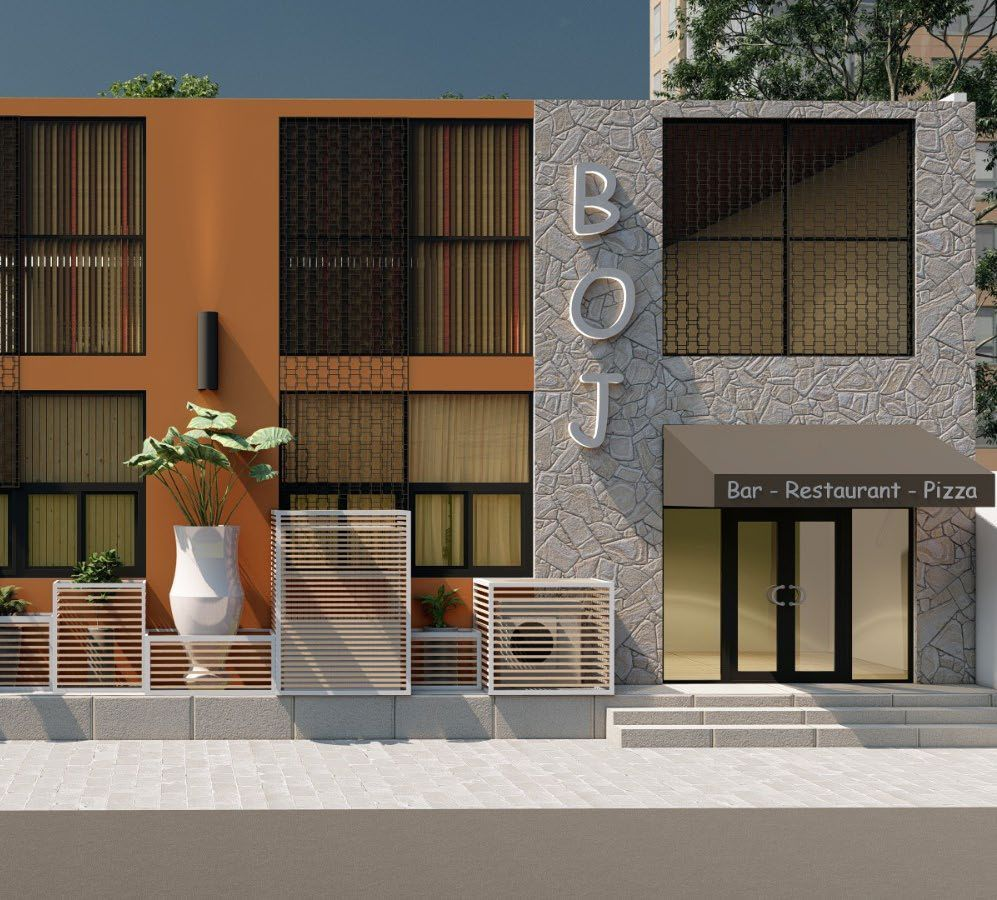
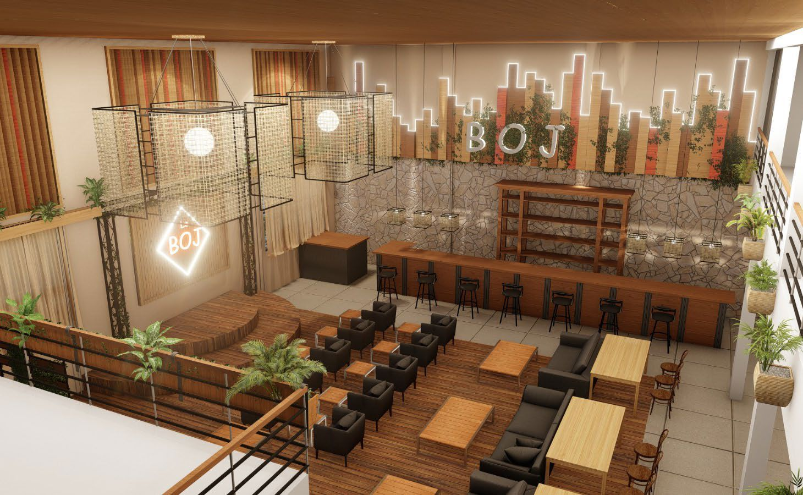
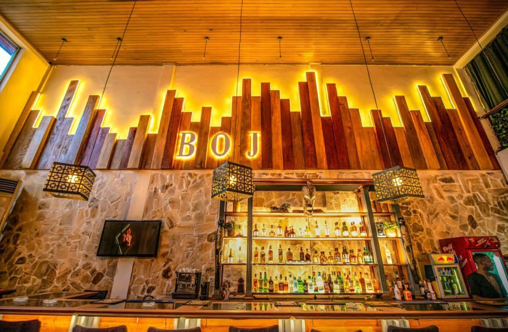
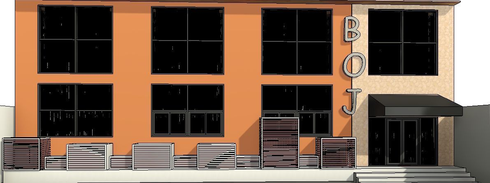
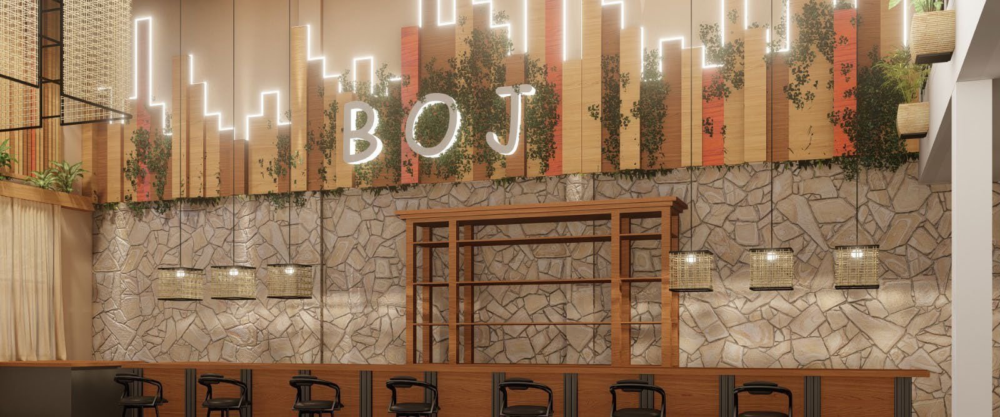
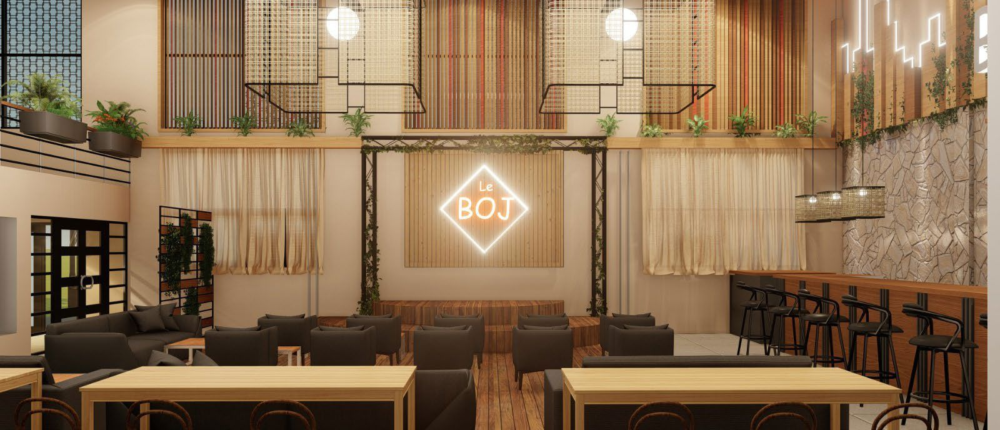
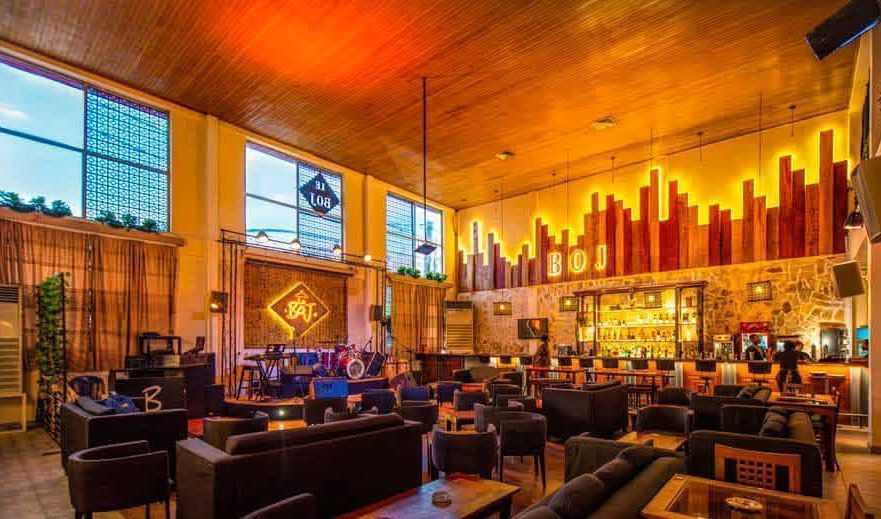

Esprit Brasserie & Chaleur
Le projet de rénovation du restaurant Le Bojolais à Douala visait à insuffler une nouvelle vie à cette institution locale tout en conservant son âme conviviale. L'intervention a porté sur une refonte complète du design d'intérieur et de la façade.
La façade a été traitée avec une alliance de pierre de parement et de claustras métalliques, créant un filtre visuel élégant qui préserve l'intimité des clients tout en restant ouvert sur la ville. À l'intérieur, les matériaux nobles comme le cuir et le bois sombre sont réveillés par un éclairage tamisé soigneusement étudié.
L'agencement a été optimisé pour fluidifier le service et offrir différentes ambiances : un espace bar dynamique, des alcôves plus intimes et une terrasse végétalisée qui offre une pause de fraîcheur bienvenue dans le climat de Douala.






